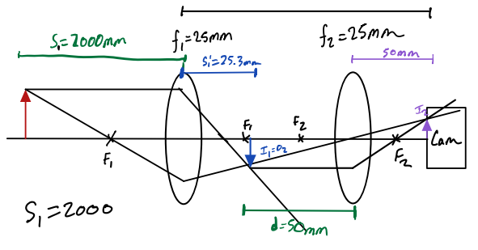
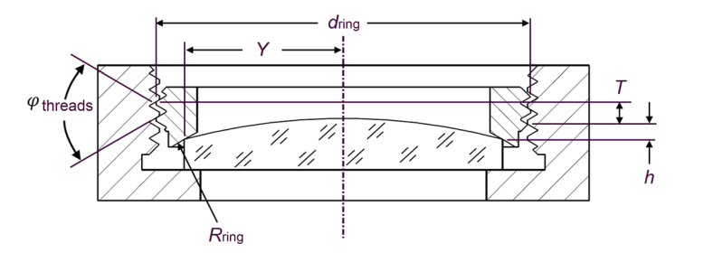
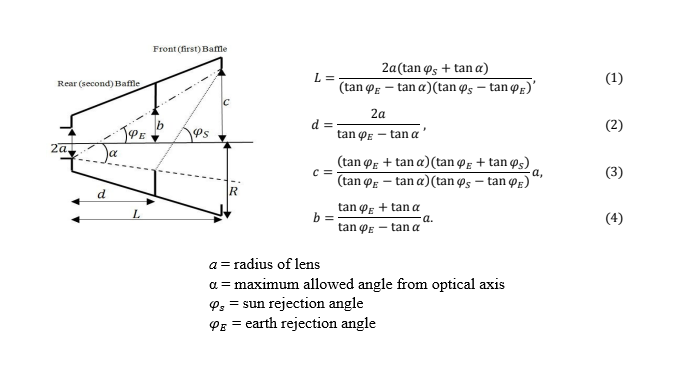
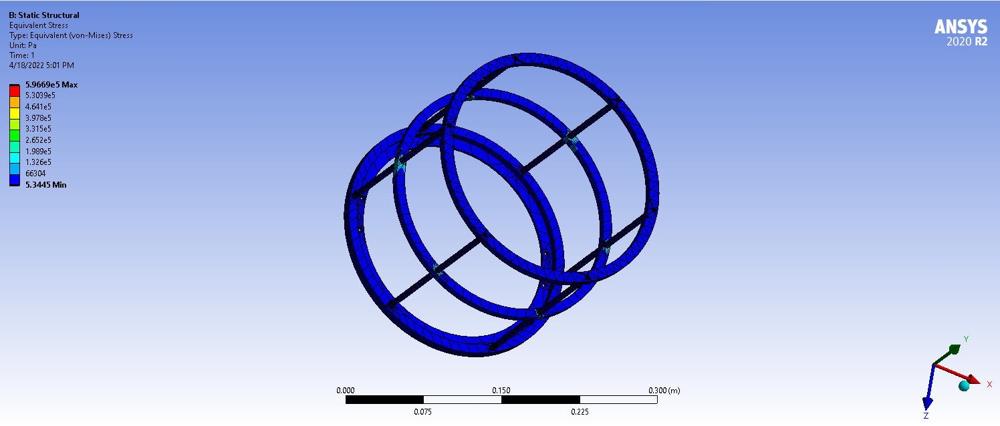
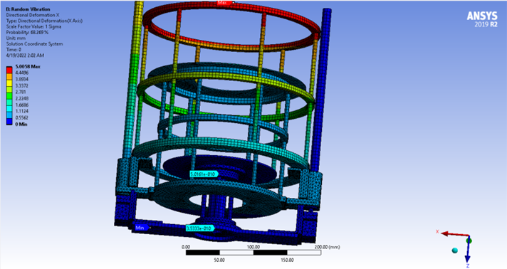
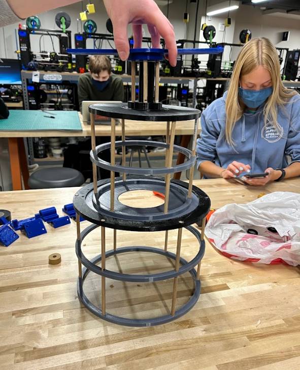
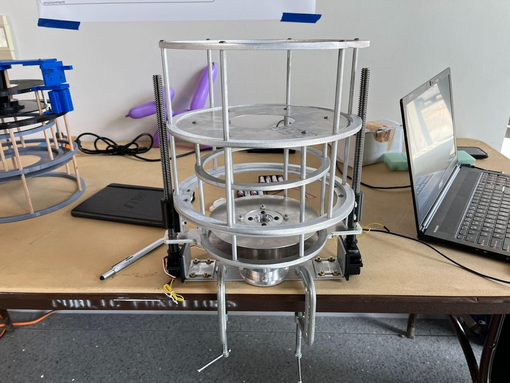
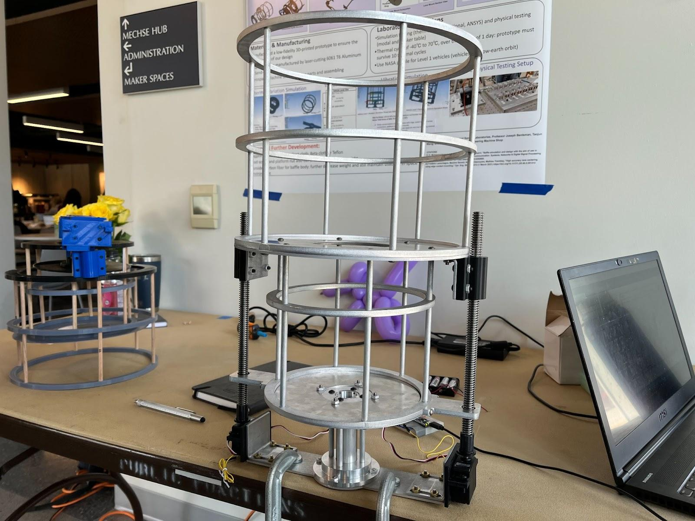

Optical Alignment System
This is an optical alignment system design in conjunction with Sandia National Laboratories for our senior capstone project. The goal is to create a system that fully expands from a compact state to observe space debris in orbit around the earth. We received an award for Exceptional Project Management and Execution from our project sponsor for our work.
Calculations and Design Phase
We were prescribed a specific pair of identical lenses to use to focus on objects at a distance of 2 meters. We then used this information to calculate the focal length required. The lenses were then fixed using a threaded screw type system shown below.


The dimensions of the baffle were calculated by factoring in the desired field of view, sun rejection angle, and earth rejection angle.

ANSYS Simulations
We performed structural simulations in ANSYS to ensure that the design could withstand the stresses of launch and operation in space. The baffle was simulated under a 10G load case to verify that deformation remained within acceptable limits.


Prototypes and Final Design
A 3D printed prototype was developed to test the feasibility of our design before committing to manufacturing out of aluminum.



Future Improvements
- More robust deployment method. Perhaps using extra supportive rails to reduce shaking as currently all the load rests on the lead screws.
- Adjustable focal length based on object distance detection. This was originally in the plan for our project but was deemed to not be a feasible accomplishment in the 3 month timespan we had to complete the project.